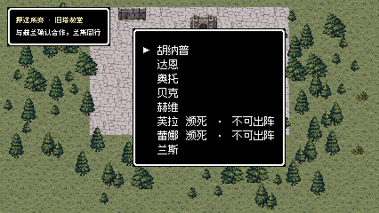
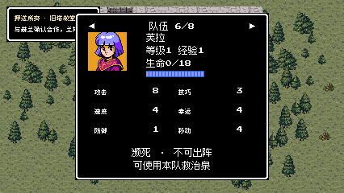
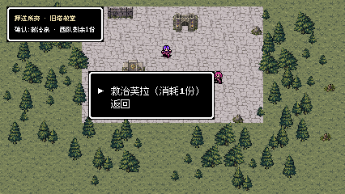
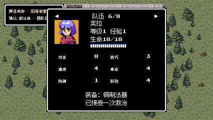
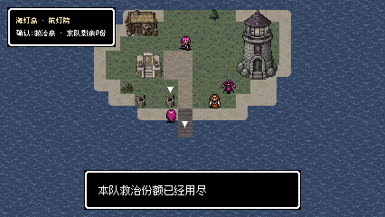
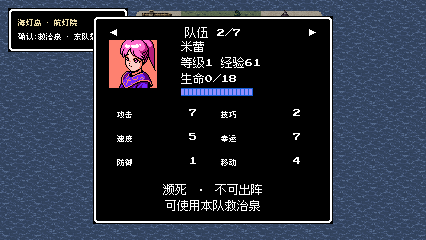
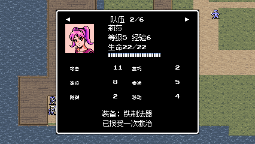
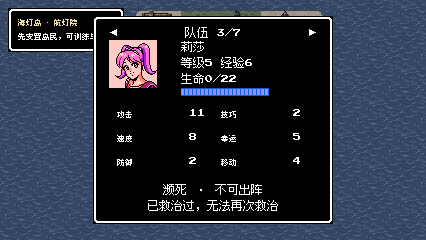
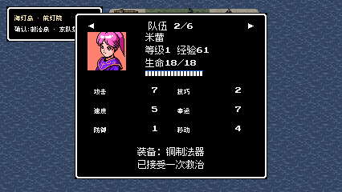

Real schema-1 chapter-end save; world travel and church entrance through keys

Round 1 | [426, 240] px | 79027 bytes | Content-safe text and status glyph pixels checked
Two rounds passed. 1043 checks; 183 keyboard inputs. Historical checkpoints and isolated fixtures, no full-playthrough claim. All captures use guarded offscreen rendering.
Delivery summary | Image sizes
Real schema-1 chapter-end save; world travel and church entrance through keys

Round 1 | [426, 240] px | 79027 bytes | Content-safe text and status glyph pixels checked
Actual historical Fula: existing level, EXP and stats visible with dying status

Round 1 | [426, 240] px | 60467 bytes | Content-safe text and status glyph pixels checked
Facing the real well opens a one-share confirmation

Round 1 | [426, 240] px | 84608 bytes | Content-safe text and status glyph pixels checked
Same real Fula after treatment; level and EXP unchanged

Round 1 | [426, 240] px | 60060 bytes | Content-safe text and status glyph pixels checked
Real schema-2 Lisa after F24; prior growth and EXP retained
Round 1 | [426, 240] px | 23983 bytes | Content-safe text and status glyph pixels checked
The actual H25 spring records zero remaining shares

Round 1 | [426, 240] px | 62303 bytes | Content-safe text and status glyph pixels checked
Second process reload; untreated Mireille remains in party, forbidden from deployment

Round 2 | [426, 240] px | 24191 bytes | Content-safe text and status glyph pixels checked
Normal world travel and F25 deployment; rescued Lisa appears on the real battlefield

Round 2 | [426, 240] px | 58086 bytes | Content-safe text and status glyph pixels checked
Explicit second-injury fixture after a genuine treatment [Boundary fixture]

Round 2 | [426, 240] px | 24050 bytes | Content-safe text and status glyph pixels checked
Second-round actual key path rescues Mireille instead of Lisa

Round 2 | [426, 240] px | 23874 bytes | Content-safe text and status glyph pixels checked
Failed early attempts retained under each round's attempt1 directory. Final checks: round 1 and round 2.